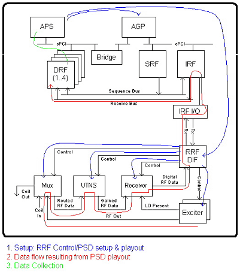

Proprietary to General Electric Company
Direction 5440000, Rev# 5
Signa HDxt Service Methods
Module Version 1.0, Version Date 4/26/07
Proprietary to General Electric Company |
Diagnostics >> RRF Chassis >> RRF Datapath Diagnostics
Tests the gain switching functionality provided by the UTNS board for each of the receiver channels. It also compares the energy measurements for each channel to ensure they are performing similarly.
Exciter
Receiver
UTNS
MUX
Minimum configuration:
Host computer
MGD chassis with all processor boards, bridge, IRF, and IRF I/O board
Complete Remote RF chassis
Proper cabling
Illustration 1: RRF UTNS Gain Block Diagram

PCI commands to set up Exciter, Receiver and put MUX in loopback
Loop twice for R1=13 and R1=8
Set up AGP
Initiate BOA via PCI
Sample data collected at DRF
APS polls DRF for receipt of collected data
APS collects data
Data is converted to magnitudes and db for each channel
Validation is performed
Output values are judged pass or fail. In the event of failure, the details of the failure can be found in the GE System Log.
Although, in the case of errors you can click the 1st Error number to see the nature of the error, it is recommended that you view the GE System Log to view all the errors that were recorded.
Data, which is converted to corresponding magnitudes and db values, is collected for each receiver when R1=13 and R1=8. The db values are checked to confirm that the R1=8 value is 15.0db± (tolerance) from the R1=13 db value. If not, a gain switching problem exists. However, a bad channel could give a false diagnosis. Thus, measurements across channels are compared in order to diagnose problems more accurately.
Click [Calculate Time] to get an estimate of the time it will take to run the selected diagnostics.
| NOTE: | Other than Test Iterations, the Test Options settings should not be changed from their default settings unless instructed to do so by a GE Healthcare engineer. There are very few circumstances when these settings ever need to be changed. |
Receiver Help Page: /csd/mr_csd/serviceDesktop/docs/cclass/receiver_board/receiver_board.htm
Exciter Help Page: /csd/mr_csd/serviceDesktop/docs/cclass/exciter_board/exciter_board.htm
UTNS Help Page: /csd/mr_csd/serviceDesktop/docs/cclass/utns_board/utns_board.htm
UTNS 3 Help Page: /csd/mr_csd/serviceDesktop/docs/cclass/utns_board/utns_board3.htm
MUX Help Page: /csd/mr_csd/serviceDesktop/docs/cclass/mux_board/mux_board.htm